|
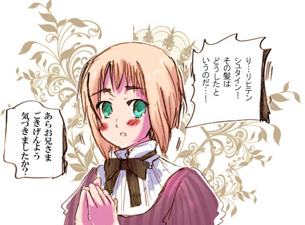
■兄馬鹿日誌■
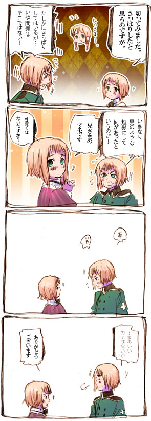
【リヒテンシュタイン】
オーストリアとスイスの真ん中にある
人口3万人の小さな国。
リヒテンシュタインの意味は光る石。
元はオーストリアの貴族、長らくドイツの家にいたが
ドイツ連邦解体時に独立、今はもっぱらスイス頼り。
軍隊はなく、実質スイスが守っている。
生活の色んなものがスイスと共同。
■兄馬鹿日誌２■
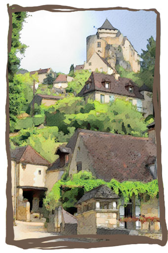
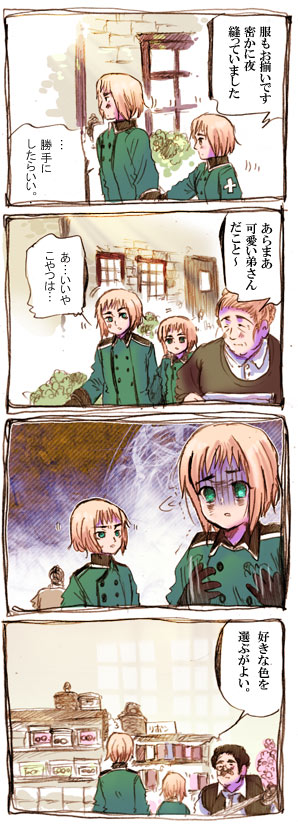
【どうでもいいリヒテンシュタイン話】
リヒテンシュタインは2007年
スイスにうっかり侵攻されたことがある。
スイス軍「道に迷って気がついたらリヒテンシュタインを侵攻していた」
というとんでもないもの。
ちなみにリヒテンシュタインは
「まあそんなこともありますよ」と軽く流した。
■遭遇■
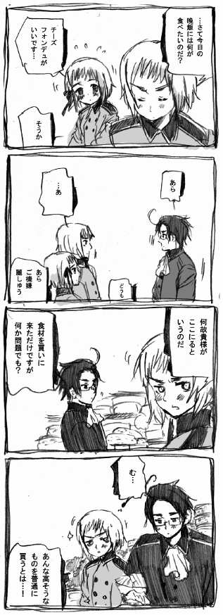
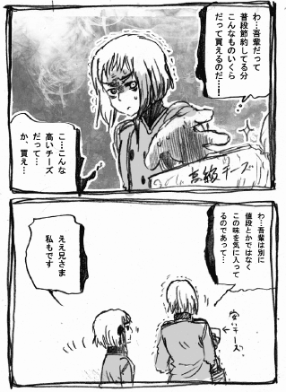
■昼食■
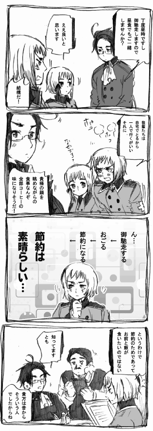
■ギスギス■
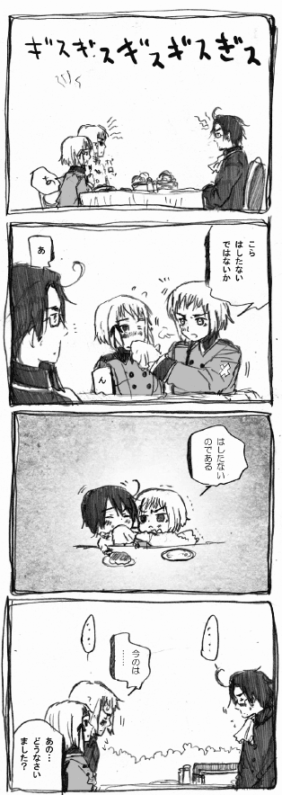
■乱入者■
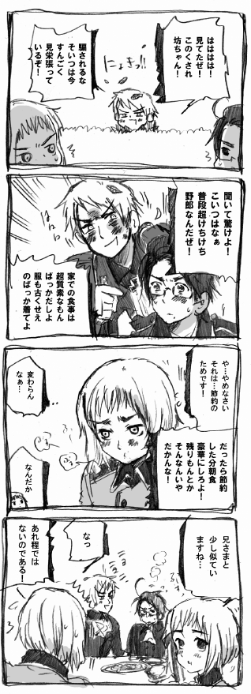
その夜…
■プレゼント■
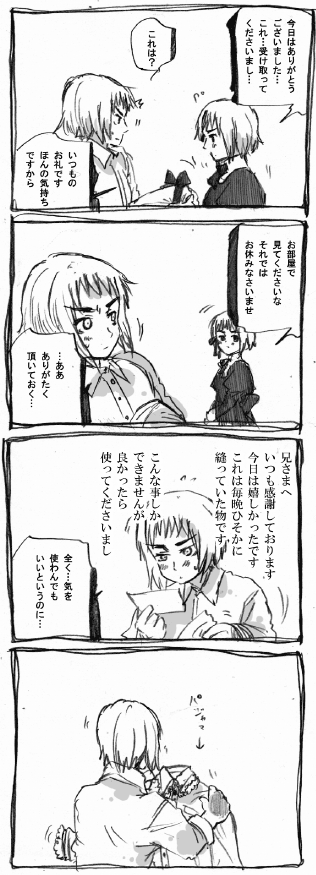
■その夜見た夢■
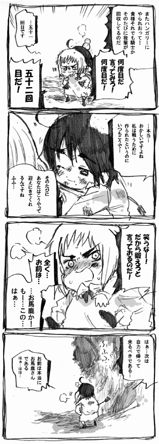
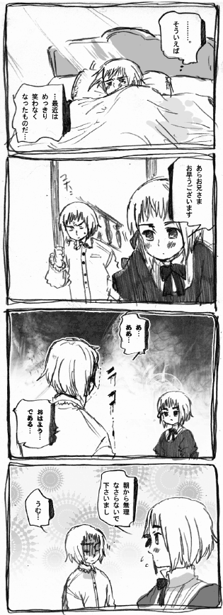

【オーストリアの成り立ち】
オーストリアの元になったのは
マジャール人から守るために作られた東辺境伯領・オストマルク。
マジャール人はハンガリーのもとになった民族の一つ
ハンガリーの本名はマジャルケスタールシャシャーグ。
下手するとハンガリーの支配下に入ってたかもしれない
危うい立地だったりする。
プロイセンも対スラブ人用に作られた
ブランデンブルク辺境伯領と
ドイツ騎士団が元になってる国。
二国とも戦うために生まれた国なんですね。
【スイスとオーストリア】
もともとオーストリアのもとになった国は
スイス地方にありました。
ハプスブルク家の城「ハプスブルク城」も
オーストリアではなくスイスにあります。
なぜ今その場所にスイスがあり、
オーストリアはもう少し東の方にあるのかというと
元々スイスとオーストリアは協力関係にあったのに
スイスがあることから、オーストリア（ハプスブルク家）
追い出しを始めたからです。
ちょっと混乱するのでハプスブルクは
分かりやすいようにオーストリアに置き換えておきます。

このオーストリアとスイスの協力関係ですが
オーストリアがこの地を外敵から守る代わりに
スイスもオーストリアに忠誠をつくしてくださいねというものでした。
二国は同じ神聖ローマ帝国にありましたが、
別の地域という区別があったのです。
この頃のハプスブルク家の主はスイス人にも
愛され「この御方なら尽くしてもいい」と
良好な関係にあったようです。
しかし幸せな時も長くは続きませんでした。
オーストリアの上司が変わると、
「スイスも俺の土地。
だから税も俺の土地の方法で行くから」
と、スイスがまるでオーストリアの物のような
扱いを始め、わざわざスイスに部下を派遣して統治させました。
（スイスとオーストリアはあくまでも協力関係にある別の地域）
そんなわけでスイスとオーストリアの
長年の協力関係が壊れていくことになります。
猟師のウイリアムテルが、ハプスブルクの
名前からしてあくどそうな悪代官ゲスラーに
「息子の上にリンゴを置いてそれを射ぬいてみよ」
といわれ、苦悩の果てに見事うちぬき、
そしてハプスブルクの悪代官も射殺する。
日本でも有名な「ウイリアムテル」の伝説の時代です。
こうして悪化した関係は元には戻らず
スイスは遂に一国としての独立を求め
各地域が「誓約同盟」の名のもとにスイス独立軍を
結成し、オーストリアに戦いを挑みました。
（この誓約同盟の誓いが行われた場所は今でも見られます）
このスイス軍。軍といっても
皆農具を持った軽装の普通の農民です。
そんな農民たちが、鎧を着こみ剣を持った
戦いのプロフェッショナル達に戦いを挑むなんてどう見ても無謀。
しかしスイス軍はオーストリアの騎士軍を返り討ちにし
（互角とかではなく、圧倒的だったようで）
何度もオーストリア騎士軍を完膚なきまでに
たたきのめしました。
有名なのが地の利を利用して
巨石を上から落とすというあれです。
オーストリア騎士軍はリアルインディジョーンズを
体感する羽目になりました。
圧倒的な強さで独立を勝ち取ったスイスでしたが
資源の乏しいスイスの土地は痩せていて
山岳地帯で凹凸も激しく、農業に向きません。
結局スイスは外国から資源を輸入し
それを加工するか、傭兵に出るかくらいしか
稼ぐ方法がなく、スイス人は何百年にもわたって
大国に囲まれながら苦労することになります。
一方オーストリアはハプスブルク城を捨て、
ウィーン地方這う這うの体でたどり着いたのですが
このウィーン地方は地下資源など豊富で
東欧の要所となるような場所だったため
結果オーストリアが拠点の地を移したのは
正解だったのかもしれません。
（場所柄トルコなどに攻められることになりますが…）
スイスとの協力関係が終わってしまったため
オーストリア、ハプスブルク家は
一時期衰退してしまいますが
ある「無能と言われ続けた男」のおかげで
歴史を語る時に抜きにしては語れない
大国へとのし上がっていくわけです。
|